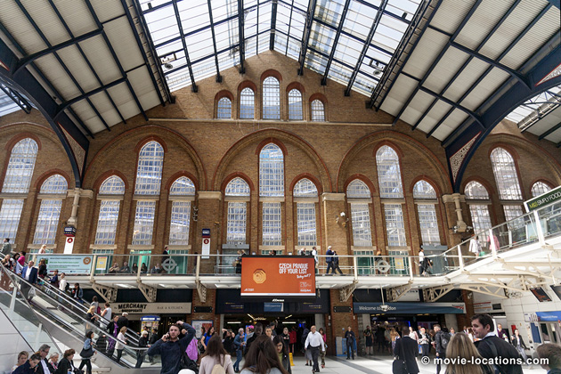
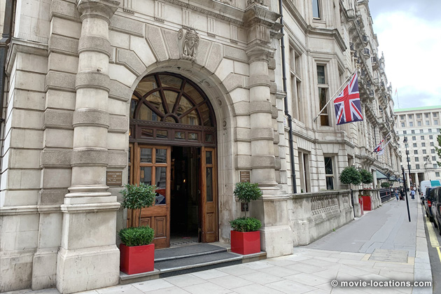

The Elephant Man
Main Content

One of David Lynch’s more mainstream films, this eerie Romantic fantasy is overlaid with an obsessive attention to the detail of industrial Victoriana. There’s little left to see of the film’s London locations; Lynch seems to have been one step ahead of the developers all the way.
The smoke-wreathed opening London street scenes filmed on the Thames South Bank by London Bridge along Shad Thames, a familiar location – seen also in The French Lieutenant’s Woman and Russell Mulcahy’s Highlander – now lost to inevitable gentrification as the warehouses are converted into wine bars and restaurants; and in the tiny knot of cobbled streets off Clink Street and St Mary Overies Dock behind Southwark Cathedral and Borough Market, SE1. Borough Market has since, of course, found fame as the neighbourhood of Bridget Jones’s Diary.
Here, too, the atmosphere is long gone. Around Clink Street and St Mary Overies, the warehouses have actually been demolished, though the old street plan and cobbled roads have been retained. The area is worth a visit, having the remains of the Bishop of Winchester’s 14th century palace banqueting hall and the old Clink Prison (which became the generic name for all subsequent lock-ups), now open as the Clink Prison Museum, at 1 Clink Street, SE1.
Gone, too, is the old Eastern Hospital on Homerton Row, Lower Clapton, E9, replaced by the spanking new Homerton Hospital. The Eastern stood in for the ‘London Hospital’ on Whitechapel Road, E1, where the real John Merrick (whose name was actually Joseph Merrick) stayed.

This London Hospital still exists, opposite Whitechapel Tube Station, but its modern annexes rendered it unsuitable for filming. The corridors of the hospital and the office of Dr Carr-Gomm (John Gielgud) seen in the film are the Liberal Club, 1 Whitehall Court at Whitehall Place, SW1, now incorporated into the Royal Horseguards Hotel, a location also used for Terry Gilliam’s Brazil, for Highlander and, more recently, for Christopher Nolan's Tenet.
The wonderfully decrepit Victorian railway station where Merrick arrives back in London after his escape from the freak show is the old Liverpool Street Station, Bishopsgate, EC2. A commuter station, servicing Essex (with the Great Eastern Line), East Anglia and Stansted Airport, the terminus was given a radical makeover, including some rebuilding, as part of the massive Broadgate development in the eighties.
The bright, airy concourse is hardly recognisable as the smoke-blackened, 19th-century edifice at which John Merrick (John Hurt), arriving back in London from the continent, is chased by a roaring mob down into the toilets.
The decayed Victorian splendour of the station would have been reason enough to film here, but Liverpool Street is where the real Merrick arrived from Brussels. Look up at the delicate wrought iron spider webs to imagine what the station once looked like, and at the sparkly clean brickwork and gothicky windows above Platform 1 to see the shell of the building as it was in the movie.
And the revamped station is changing already. A row of cash-machines at the foot of the stairs from the Liverpool Street entrance has replaced the telephones where Tom Cruise meets up with Jon Voight in Brian De Palma’s Mission Impossible. The photo booth on the station since provided the entrance to the vast underground HQ of MI6 in Stormbreaker.
Visit Info
Visit The Film Locations
UK | London
Flights: Heathrow Airport; Gatwick Airport
Visit: London
Travelling: Transport For London
Stay at: the Royal Horseguards Hotel, 2 Whitehall Court London SW1A 2EJ (tel: 020.7451.0390)